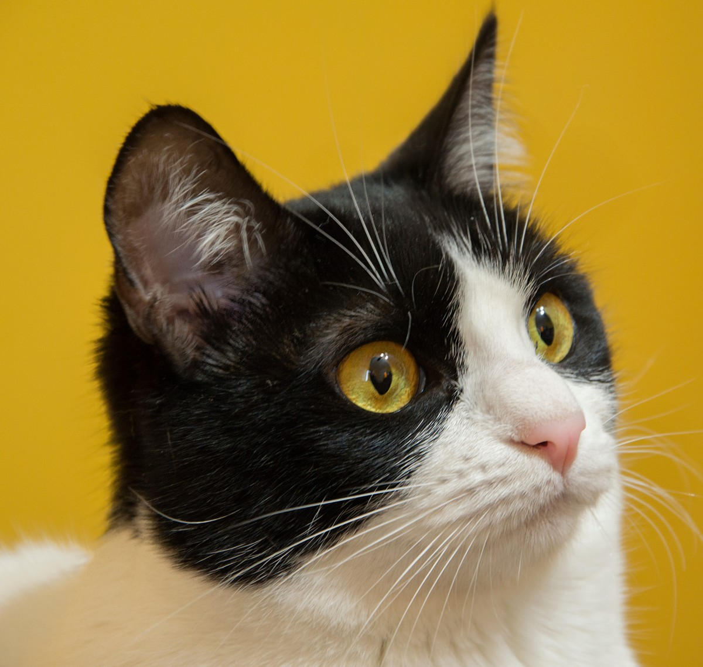
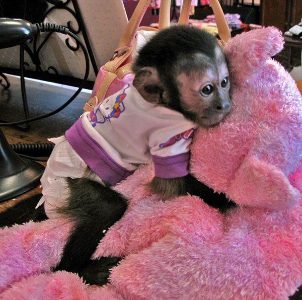
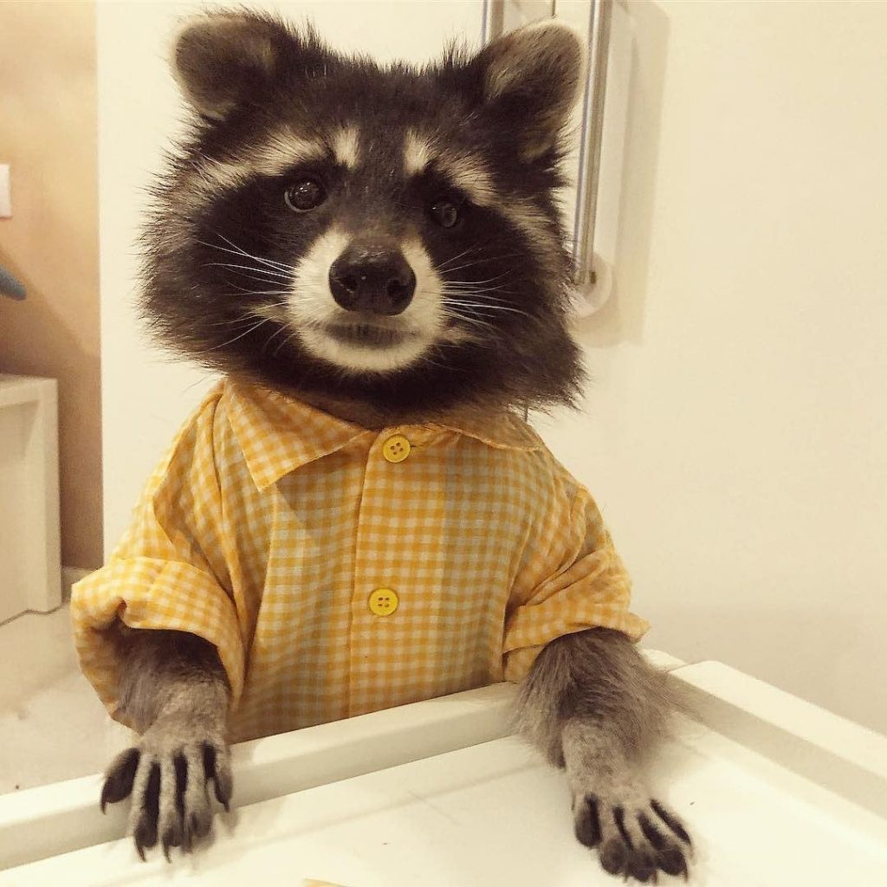
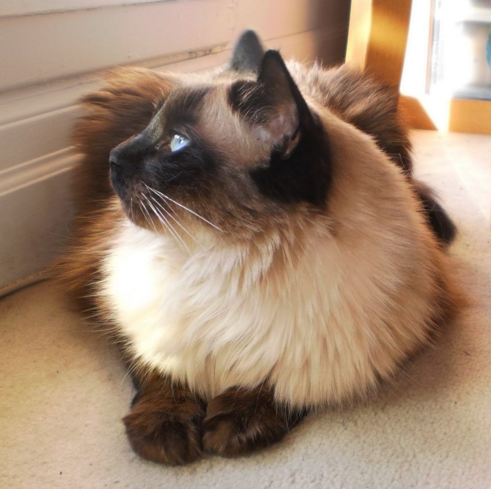
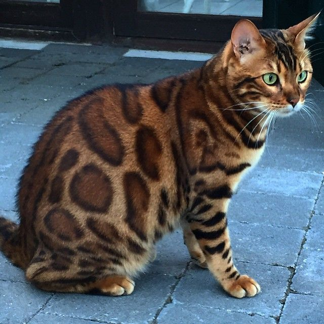
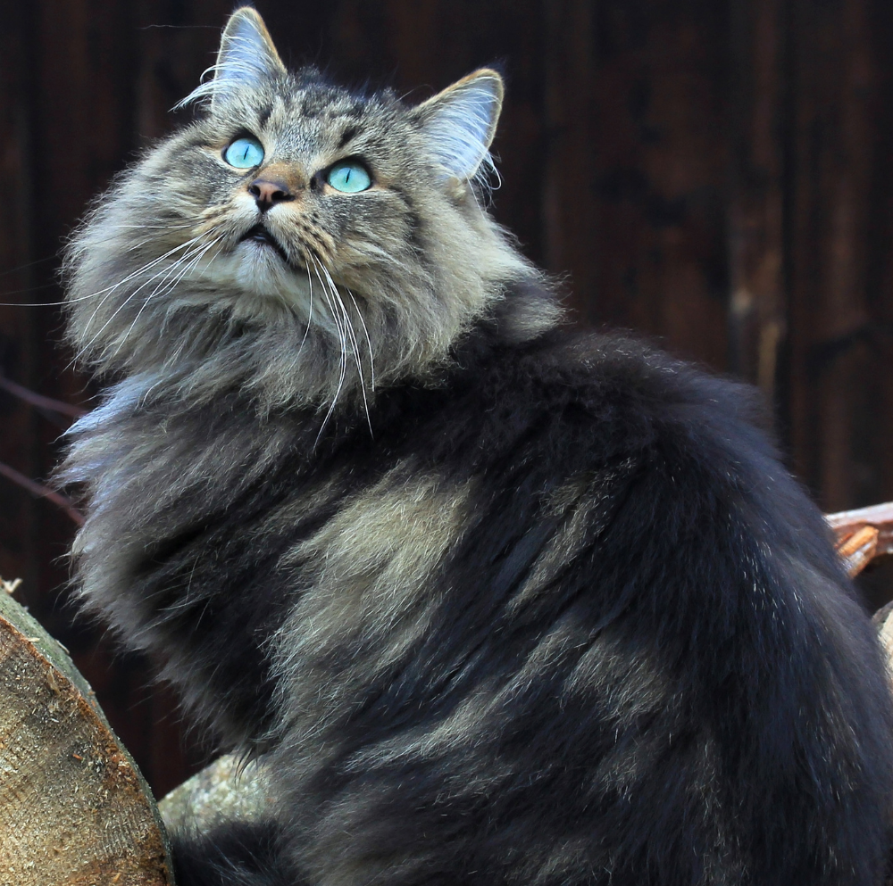

Pets
|

Cat
|
Cats are the best because they’re independent, smart, and full of personality. They can be playful one moment and calm the next, and they have a way of making a home feel cozy just by being there. There’s something special about their curiosity and little quirks that makes them endlessly entertaining and comforting. |

Dog
|
Dogs are amazing because they’re loyal, loving, and full of energy, always ready for play or adventure. They bring so much joy, but they’re also high-maintenance, needing constant walks, attention, and care. They’re incredible companions, just maybe not the easiest choice for a first pick./td> |
|

Monkey
|
Monkeys are fascinating pets because they’re incredibly smart, curious, and full of personality. They can learn tricks, interact in playful ways, and keep you endlessly entertained with their antics. Having a monkey around feels like having a little whirlwind of energy and mischief that’s impossible to ignore. |
|

Raccoon
|
I love raccoons because they’re probably the cutest animals on the planet, with so much personality packed into tiny bodies. You can teach them tricks like a dog, but they have the curious, mischievous side of a cat. They’re like a perfect mix of both, even if they’re not quite as strong or agile as either. |

Ferret
|
Ferrets are awesome because they’re playful, curious, and full of energy, always exploring and getting into funny situations. They have this mischievous charm that makes you laugh, but they also bond with you in their own unique way. Watching a ferret in action feels like having a tiny, clever entertainer around all the time. |
Cat Breeds
A collection of my top 5 favorite cat breeds.

Maine Coon
|
The Maine Coon is a gentle giant of a cat, with a big, fluffy body and a personality just as warm. They’re friendly, smart, and love to be part of the action without being overly demanding. Having one around feels like having a calm, loyal companion that’s impossible not to adore. |
|

Balinese
|
The Balinese is sleek, elegant, and full of personality, almost like a little dancer on your furniture. They’re affectionate, playful, and love interacting with people, always curious about what’s going on. Having one around feels like having a lively, loving companion who keeps life interesting. |
|

Bengal
|
The Bengal is wild-looking but incredibly playful and smart, with a sleek, spotted coat that turns heads. They’re energetic, curious, and love to explore, almost like having a tiny, exotic adventure partner at home. Being around one feels exciting, full of movement, mischief, and personality. |
|

Norwegian Forest
|
The Norwegian Forest cat is a majestic, fluffy giant with a calm and friendly personality. They’re adventurous and playful but also love lounging and observing quietly, making them feel wise beyond their years. Having one around is like having a gentle, loyal companion who’s both impressive and comforting. |

Domestic Shorthair
|
The Domestic Shorthair is a versatile, friendly cat with a wide variety of coat colors and patterns. They’re playful, adaptable, and easygoing, making them perfect companions for almost any home. Having one around feels like having a loyal, lively friend who’s always full of personality. |